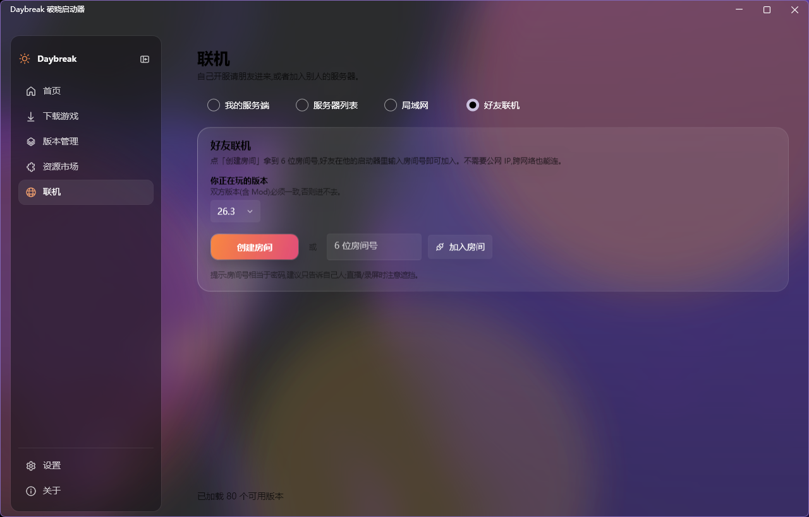

从装游戏到联机，一个启动器全包了。下面是它每天在干的活。
离线登录用于单机和测试。微软正版走 MSAL 设备码授权，令牌自动续期，不用反复登录。 外置登录支持 Yggdrasil 服务器（比如 LittleSkin），会自己把 authlib-injector 注入进去。
Range 分片并发下载、SHA1 校验、镜像自动降级。官方源和 BMCLAPI 双源可切， 哪边慢就换哪边，不用你手动点。
Fabric / Forge / NeoForge 加载器一键安装。Modrinth 市场里能按游戏版本和加载器筛，
搜到就能装。整合包支持 .mrpack 和 CurseForge 的 zip（不用 API key）。
已装的 Mod 会检查更新，能一键升级。
游戏闪退时，扫 crash-reports 和 latest.log，
用 12 条规则翻成具体建议，不用再对着堆栈一行行猜。
每个版本有自己的存档、配置和 mods 目录，只有 libraries 和 assets 共享。 换版本、装整合包都不会把原来的东西搞乱。
深色、浅色还是跟随系统，Acrylic 还是 Mica，都能选。 JVM 参数、内存分配、HTTP 或 SOCKS5 代理也都能自己填。
不用公网 IP，也不用在路由器上折腾端口映射。顺序就是下面这三步。
选版本和类型，点一下就开始下载并启动。
点「创建房间」会生成一个 6 位数字房间号。
好友输入房间号加入，然后双方点「启动游戏并进服」。

联机要创建虚拟网卡，所以需要管理员权限。启动器平时不需要管理员， 只有在点「创建房间」或「加入房间」时才提示你重启一次；不需要联机就完全不受影响。 另外，双方的游戏版本和 Mod 必须完全一致，这是 Minecraft 本身的限制。
.zip，约 97 MB；三个渠道的文件名不同，内容一致）easytier 文件夹别删，那是联机组件Daybreak.Launcher.exe自包含单文件，不用另外装 .NET 运行时。
Daybreak 是一个独立开发的 Minecraft Java 版启动器，代码、界面、品牌都是自己写的， 没有参考或复制任何闭源启动器的代码。功能定位相似，但实现和界面完全不同。
单机可以用离线登录。联机（包括好友联机和自己开的服）建议用正版账号，很多服务器会校验。
联机要在你的电脑上创建一块虚拟网卡，这必须管理员权限。启动器平时不需要管理员， 只有点「创建房间」或「加入房间」时才提示你重启一次。点「否」就不提权， 其它功能照常使用。
6 位数字大约 90 万种组合，相当于一个弱密码。请只告诉自己人，直播或录屏时注意遮挡。 玩完记得点「结束联机」。
最常见的原因是两边版本不一致。游戏版本、Mod 的版本和数量都必须完全一样。 另外确认双方都成功创建或加入了房间，并且房主已经启动了服务端。 如果还是不行，把联机页里的「联机日志」发到 Issue。
已知问题：上游 Maven 仓库在国外，国内直连会超时，而且安装器内部不走镜像。 临时办法是先在设置里配好代理再装。Forge 不受影响。
带上 %APPDATA%\Daybreak\logs 目录下的日志，联机问题请一并附上联机页的「联机日志」，
到 GitHub Issue 提。